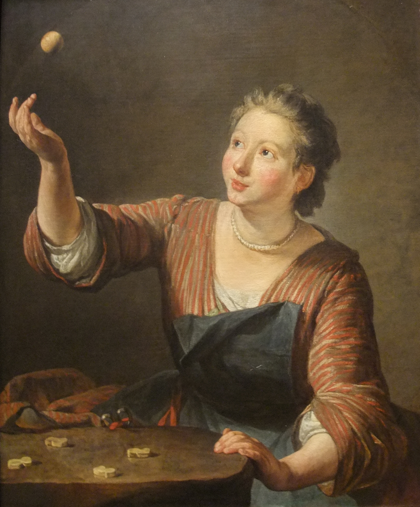

Joc tradicional català
Les tabes
Una web clara i visual per entendre què és una taba, com s’aconsegueix, com es prepara i per què aquest joc continua sent tan valuós.
- 4 caresfuncionals i recognoscibles
- 5 pecesen la variant d’habilitat
- 1 col·laboradorTall a Tall Carnissers
